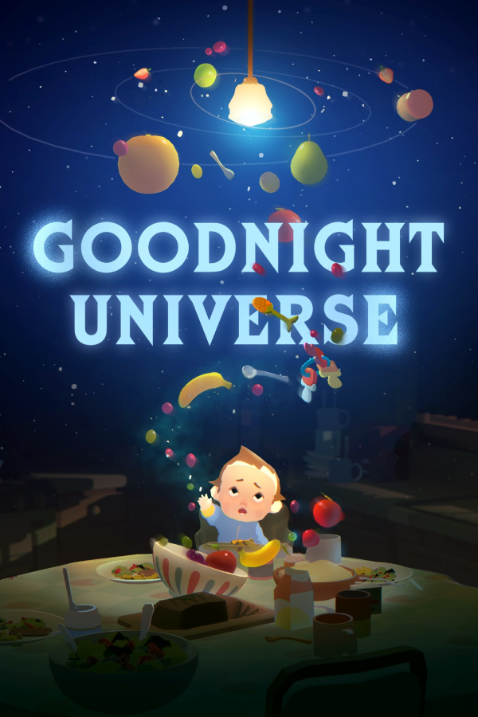

Game profile

Goodnight Universe
Every archived year-end list appearance, including placement and points earned.
About the Game
From the creators of Before Your Eyes.You are Isaac, a 6-month-old baby, developing mysterious psychic powers. What you want most is to be loved and accepted by your family, but a secretive tech corporation wants you for their own. The game features an immersive “camera as controller” mode, expanding on the innovative use of camera-based technology that the development team is known for.
| Released | 2025-11-11 |
|---|---|
| Developer | Nice Dream |
| Publisher | Skybound Games |
| Genres | Adventure, Indie |
| Platforms | PC, Nintendo Switch |
SingleplayerSteam AchievementsFull controller supportStory RichFirst-PersonSci-fiPoint & ClickCuteMystery3DColorfulCinematic
Where to Buy
Game information provided by RAWG.
1List appearances
1Years represented
Points by Year
12025 points
List History
| Year | Source | List | Placement | Points |
|---|---|---|---|---|
| 2025 | GameSpot | The Best Games Of 2025 | Unranked | 1 |